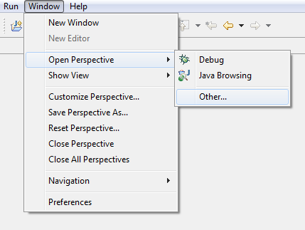

Pre-requisites
- Eclipse
- You will need the Subclipse Plugin 1.6+, or some other means for accessing SVN.
- Chrome or Firefox.
- Greasemonkey (only for Firefox)
Downloading the repositories
To download all the necessary projects that will be needed to create a meta-metadata application follow these steps:
-
In Eclipse select Window > Open Perspective > Other
Then select SVN Repository Explorer.  -
Right click in the space below SVN Repositories and select New > Repository Location
The URLs of the five projects needed:
https://svn.ecologylab.net/ecologylabFundamental/trunk
https://svn.ecologylab.net/ecologylabGeneratedSemantics/trunk
https://svn.ecologylab.net/ecologylabSemantics/trunk
https://svn.ecologylab.net/cyberneko/trunk
https://svn.ecologylab.net/jtidy
https://svn.ecologylab.net/MMDAuthoring/trunk
Username: anonymous, password: anonymous. - For each repository right-click on the trunk folder, and select Checkout. The default project settings should be correct, click Finish.
Setting up Meta MetaData Respository Service
-
Once all the projects are checked out return to the Java perspective.
A few errors might show up, to correct these you may need
- To right-click on the ecologylabGeneratedSemantics project > click Properties > choose Java Build Path on the left > click the Projects Tab > select ecologylabInteractive > hit Remove. This will fix those errors.
- To cleanup by going to Projects->Clean->clean all projects
- Before starting service please make sure that your port 82 is available.
- To start Respository service run MMDRepositoryServer.java
Installing extension
Firefox
- Install Greasemonkey.
- Enable your Greasemonkey Add and just drag and drop xpath_firefox.user.js from working directory of MMDAuthoring project.

- Click install. That's it.
Chrome
- Just drag and drop xpath_chrome.user.js from working directory of MMDAuthoring project.
- Click continue on bottom right and then click install. That's it.